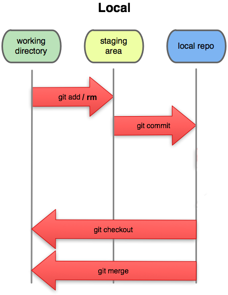
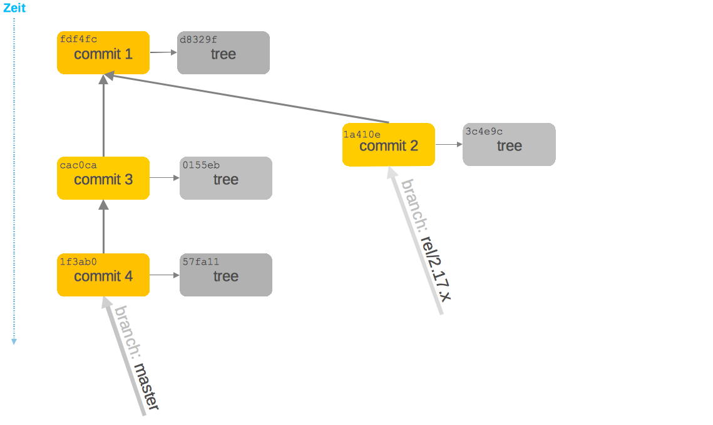
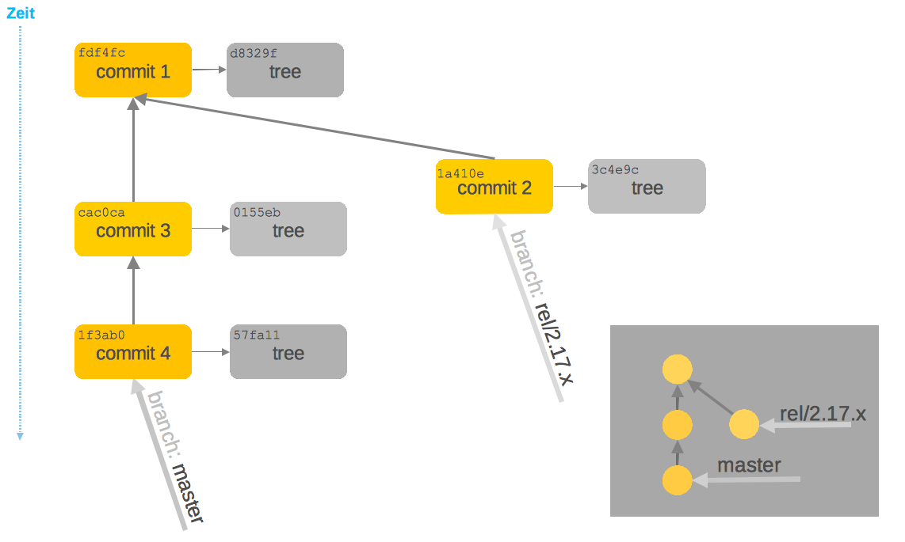

## erstellt einen neuen Branch, der auf den gleichen Commit
## wie master zeigt
$ git branch testing master
## erstellt einen neuen Branch, der auf den gleichen Commit
## wie HEAD zeigt
$ git branch testing HEAD
## erstellt einen neuen Branch, der auf den gleichen Commit
## wie HEAD zeigt
$ git branch testing
## erstellt einen neuen Branch, der auf den Commit 23c4fe5 zeigt
$ git branch 23c4fe5VCS 2
Rekapitulation
Git Kommandos

Git Kommandos
Interaktion zwischem lokalem Repository und WorkCopy
git checkout mastergit add README.mdgit rm README.mdgit commit -m "Neuer Code"git checkout — README.mdgit reset --hard HEAD
Git Kommandos 2
Hilfe
git --helpgit commit --help
Graphische Darstellung
gitklog --all --decorate --oneline --graphSourceTree, Fork, GitKraken
Git Speicher
- Commit
Enthält Verweise auf alle Dateien zu einem bestimmten Zeitpunkt
Enthält einen Verweis auf den Vorgänger-Commit
Branch
Branching
Branching means you diverge from the main line of development and continue to do work without messing with that main line.
Branch
Branch
masterzeigt momentan auf neuesten Commit


HEAD
HEAD ist ein spezieller Zeiger
zeigt auf den Branch, mit dem die Workcopy verbunden ist

Auschecken (aktivieren) eines anderen Branches
## aktivert einen bereits bestehenden Branch
$ git checkout testing
## erzeugt und aktiviert einen neuen Branch, der auf den gleichen
## Commit wie HEAD zeigt
$ git checkout -b testing
(Git) Branch
== Referenz
ein (beweglicher) Zeiger auf einen Commit
bei
git commitwird der Zeiger weitergeschobengenauer:
der Branch, auf den
HEADzeigt, verweist nach dem Committen auf den neuen Commit verschobenHEADzeigt weiter auf diesen Branchim RefLog wird der neue (effektive) Wert von
HEADprotokolliert
Anzeige aller Branches
$ git branch
feature-24
* master
my-branch-1
my-branch-2
$ git status
On branch master
...Ein weiterer Commit …
$ echo 'neuer Text' > neue-datei.txt
$ git commit -a -m 'Neue Datei auf branch testing'
Die Historie läuft auseinander
$ git co master
$ echo 'neuer anderer Text' > neue-datei-auf-master.txt
$ git commit -a -m 'Neue Datei auf branch master'
Branch Sichtweisen

Branch Sichtweisen

Tag
eine dauerhafte Markierung / Kennzeichnung
unveränderlich
zum Merken von bestimmten Zwischenständen
Tag
Leichtgewichtiger Tag
== Referenz (genau wie ein Branch)
Annotated Tag
eigener Objekt-Typ im Git Datenmodell, enthält
SHA eines Commits
Datum & Author
Nachricht
ggf. PGP Signatur
Tag erzeugen
## leichtgewichten Tag erstellen
$ git tag test-tag-1
## alle Tags anzeigen
$ git tag
release-1
release-2
test-tag-1
## annotated Tag erstellen
$ git tag -a -m "Noch ein Test tag" test-tag-2
## Alle Tags inkl. Message anzeigen
$ git tag -n
release-1 Commit-Message ...
release-2 Commit-Message ...
test-tag-1 Commit-Message ...
test-tag-2 Noch ein Test tagReferenzen
referenceeine Datei
Dateiname entspricht dem Namen der Referenz
Inhalt ist der SHA des Commits, auf den die Referenz verweist
symbolic referenceeine Datei
Dateiname entspricht dem Namen der Referenz
Inhalt ist der Name einer anderen Referenz
eigentlich gibt es hier nur
HEAD
ORIG_HEAD, FETCH_HEAD sind Sonderfälle
Referenzen
## Auflistung aller Dateien im Ordner .git/refs
$ find .git/refs
.git/refs
.git/refs/heads
.git/refs/heads/master
.git/refs/heads/my-branch-1
.git/refs/tags
.git/refs/tags/test-tag-0
.git/refs/tags/test-tag-1
.git/refs/remotes
.git/refs/remotes/origin
.git/refs/remotes/origin/masterSymbolische Referenzen
## Ausgabe des Inhalts der Datei .git/HEAD
$ cat .git/HEAD
ref: refs/heads/masterBranches == Referenzen, die unter
.git/refs/headsgespeichert werdenTags == Referenzen, die unter
.git/refs/tagsgespeichert werdennur lightweight Tags
Ref-Log
Protokoll für alle Änderungen, die an den Referenzen gemacht wurden (nur lokal)
Gut zu wissen
die meisten Git Kommandos haben mind. einen Parameter, der eine Commit ID (SHA) ist
## der ganze SHA
$ git show a544751ae3de9965c35b88958b0d219e29f7295d
## der abgekürzte SHA
$ git show a54475
## eine Referenz
$ git show master
## eine symbolische Referenz
$ git show HEAD
## default ist immer HEAD
$ git showReflog
## zeigt die Historie von HEAD
$ git reflog
## zeigt den 5. letzten Commit beginnend bei HEAD
$ git show HEAD@{5}
## zeigt den letzten Commit von gestern
$ git show HEAD@{yesterday}
## zeigt die Logausgaben mit der reflog Syntax
$ git log –gStashing
Verstecken der aktuellen Änderungen
alle Änderungen an der Workcopy
alles im Stage-Bereich (Index)
Workspace und Stage-Bereich sind danach wieder auf dem Stand des letzten Commits (siehe HEAD)
Neue Dateien (untracked) werden per default ignoriert
Man kann unzählig viele Stashes anlegen
Stash Kommandos
## Änderungen auf Stash-Stack verschieben
$ git stash
## Änderungen in benannten Stash verschieben
$ git stash push –m „mein zweiter Stash“
## Alle Stashes auflisten
$ git stash list
## Stash Nr 0 auf den aktuellen Workspace anwenden,
## aber Stash nicht löschen
$ git stash apply stash@{0}
## Stash Nr 0 auf den aktuellen Workspace anwenden
## und Stash von Stack löschen
$ git stash pop stash@{0}